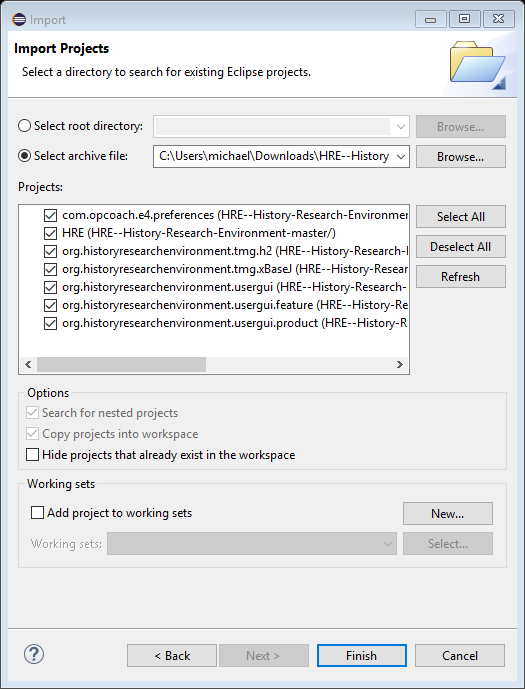

Switch to perspective Git:
|
Open Perspective |
Clone a Git repository by pasting the address here:
https://github.com/MichaelErichsen/HRE--History-Research-Environment
|
HREGUIRetrace - Eclipse SDK |
|
Clone Git Repository |
|
Clone Git Repository |
|
Clone Git Repository |
|
HRE - Eclipse Platform |
Switch to Plug-in Development perspective:
|
HRE - Eclipse Platform |
Please ignore the 227 warnings.
Download a zip file from Github at
https://github.com/MichaelErichsen/HRE--History-Research-Environment
|
MichaelErichsen/HRE--History-Research-Environment: Main repo for HRE code - Mozilla Firefox |
|
Screen Clipping |
It will be called HRE--History-Research-Environment-master.zip In Eclipse:
File Import Existing Projects into Workspace
|
Import |
You will get a lot of warnings about raws type. Don’t worry. I did not bother to fix then, but they are not a problem:
|
HREGUIRetrace - org.historyresearchenvironment.usergui.product/Configuration.product - Eclipse SDK |